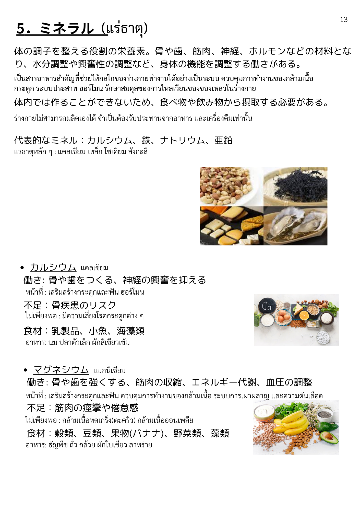
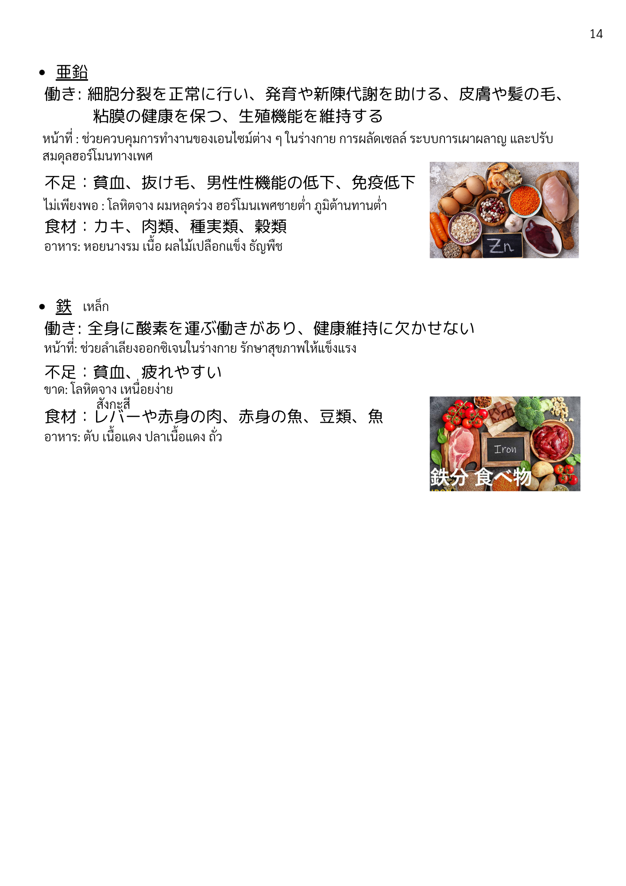

| 漢字 | ひらがな | ความหมาย (ไทย) |
|---|---|---|
| ミネラル | みねらる | แร่ธาตุ |
| 栄養素 | えいようそ | สารอาหาร |
| 代表的 | だいひょうてき | เป็นตัวแทน / สำคัญ |
| 調子 | ちょうし | สภาพ / ภาวะ |
| 整える | ととのえる | ปรับ / จัดให้สมดุล |
| 役割 | やくわり | บทบาท / หน้าที่ |
| 材料 | ざいりょう | วัตถุดิบ / องค์ประกอบ |
| 機能 | きのう | การทำงาน / ฟังก์ชัน |
| 調整 | ちょうせい | การปรับ / ควบคุม |
| 摂取 | せっしゅ | การบริโภค / รับเข้าร่างกาย |
| 必要 | ひつよう | จำเป็น |
| 食べ物 | たべもの | อาหาร |
| 飲み物 | のみもの | เครื่องดื่ม |
| 漢字 | ひらがな | ความหมาย (ไทย) |
|---|---|---|
| カルシウム | かるしうむ | แคลเซียม |
| マグネシウム | まぐねしうむ | แมกนีเซียม |
| 鉄 | てつ | ธาตุเหล็ก |
| ナトリウム | なとりうむ | โซเดียม |
| 亜鉛 | あえん | สังกะสี |
| 漢字 | ひらがな | ความหมาย (ไทย) |
|---|---|---|
| 骨 | ほね | กระดูก |
| 歯 | は | ฟัน |
| 筋肉 | きんにく | กล้ามเนื้อ |
| 神経 | しんけい | เส้นประสาท |
| ホルモン | ほるもん | ฮอร์โมน |
| 皮膚 | ひふ | ผิวหนัง |
| 髪 | かみ | ผม |
| 粘膜 | ねんまく | เยื่อบุ |
| 血液 | けつえき | เลือด |
| 全身 | ぜんしん | ทั่วร่างกาย |
| 酸素 | さんそ | ออกซิเจน |
| 漢字 | ひらがな | ความหมาย (ไทย) |
|---|---|---|
| 水分調整 | すいぶんちょうせい | การควบคุมน้ำในร่างกาย |
| 興奮性 | こうふんせい | การกระตุ้น / ตื่นตัว |
| 抑える | おさえる | ยับยั้ง / ควบคุม |
| 強くする | つよくする | ทำให้แข็งแกร่ง |
| 収縮 | しゅうしゅく | การหดตัว |
| エネルギー代謝 | えねるぎーたいしゃ | การเผาผลาญพลังงาน |
| 血圧 | けつあつ | ความดันโลหิต |
| 細胞分裂 | さいぼうぶんれつ | การแบ่งเซลล์ |
| 正常 | せいじょう | ปกติ |
| 発育 | はついく | การเจริญเติบโต |
| 新陳代謝 | しんちんたいしゃ | การฟื้นฟู/เผาผลาญใหม่ |
| 助ける | たすける | ช่วย / สนับสนุน |
| 保つ | たもつ | รักษา / คงไว้ |
| 維持 | いじ | การคงไว้ / รักษา |
| 健康維持 | けんこういじ | การรักษาสุขภาพ |
| 生殖機能 | せいしょくきのう | ระบบสืบพันธุ์ |
| 運ぶ | はこぶ | ขนส่ง / ลำเลียง |
| 漢字 | ひらがな | ความหมาย (ไทย) |
|---|---|---|
| 不足 | ふそく | ขาด / ไม่เพียงพอ |
| 骨疾患 | こつしっかん | โรคกระดูก |
| リスク | りすく | ความเสี่ยง |
| 痩せ | やせ | ผอม / น้ำหนักลด |
| 倦怠感 | けんたいかん | อาการอ่อนเพลีย |
| 貧血 | ひんけつ | โลหิตจาง |
| 抜け毛 | ぬけげ | ผมร่วง |
| 男性機能 | だんせいきのう | สมรรถภาพเพศชาย |
| 低下 | ていか | การลดลง |
| 免疫低下 | めんえきていか | ภูมิคุ้มกันลดลง |
| 疲れやすい | つかれやすい | เหนื่อยง่าย |
| 漢字 | ひらがな | ความหมาย (ไทย) |
|---|---|---|
| 乳製品 | にゅうせいひん | ผลิตภัณฑ์จากนม |
| 小魚 | こざかな | ปลาตัวเล็ก |
| 海藻類 | かいそうるい | สาหร่าย |
| 穀類 | こくるい | ธัญพืช |
| 豆類 | まめるい | ถั่ว (ประเภทถั่ว) |
| 果物 | くだもの | ผลไม้ |
| 野菜類 | やさいるい | ผัก (ประเภทผัก) |
| 藻類 | そうるい | สาหร่าย |
| カキ | かき | หอยนางรม |
| 肉類 | にくるい | เนื้อสัตว์ (ประเภทเนื้อ) |
| 魚介類 | ぎょかいるい | อาหารทะเล |
| 種実類 | しゅじつるい | เมล็ดและถั่วเปลือกแข็ง |
| レバー | ればー | ตับ |
| 赤身肉 | あかみにく | เนื้อแดง |
| 赤身魚 | あかみざかな | ปลาเนื้อแดง |
| 漢字 | ひらがな | ความหมาย (ไทย) |
|---|---|---|
| 体内 | たいない | ภายในร่างกาย |
| 作る | つくる | สร้าง / ทำ |
| 興奮 | こうふん | การกระตุ้น / ตื่นตัว |
| 欠かせない | かかせない | ขาดไม่ได้ |